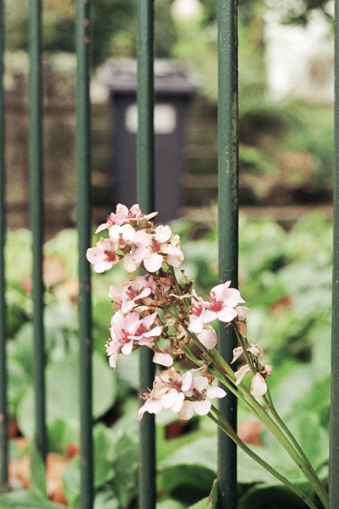
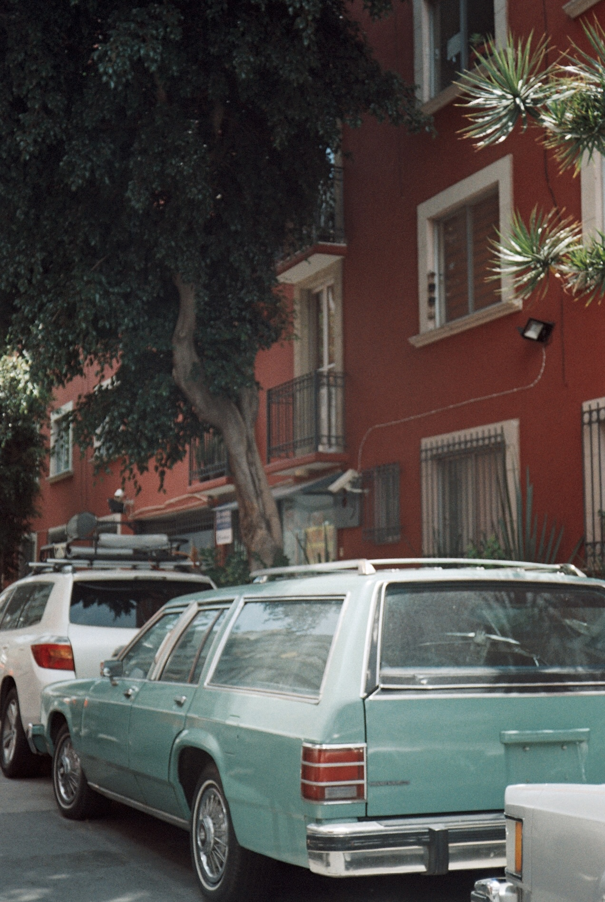
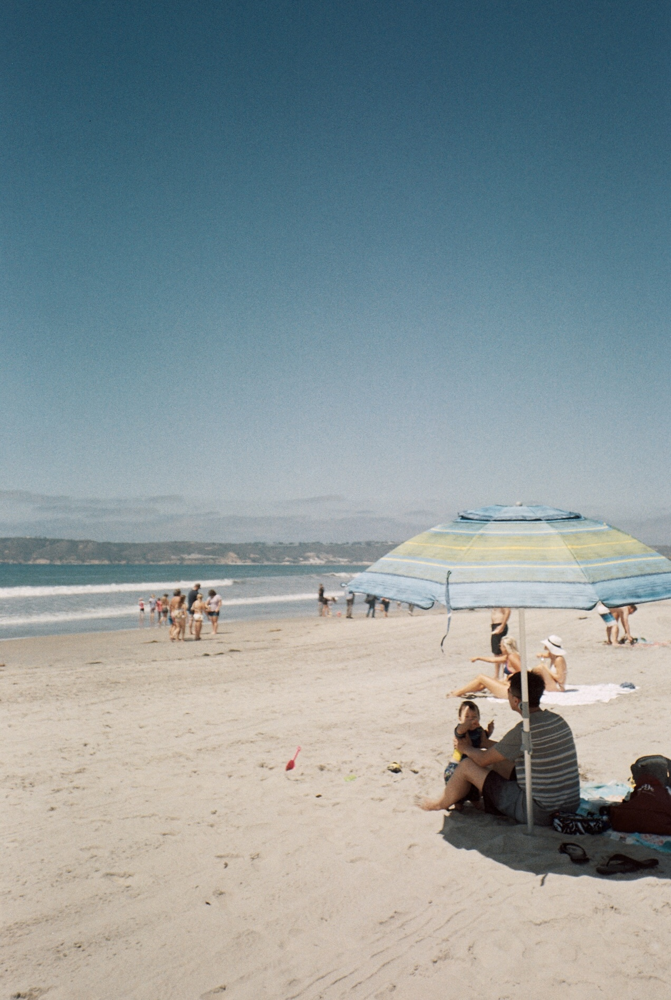
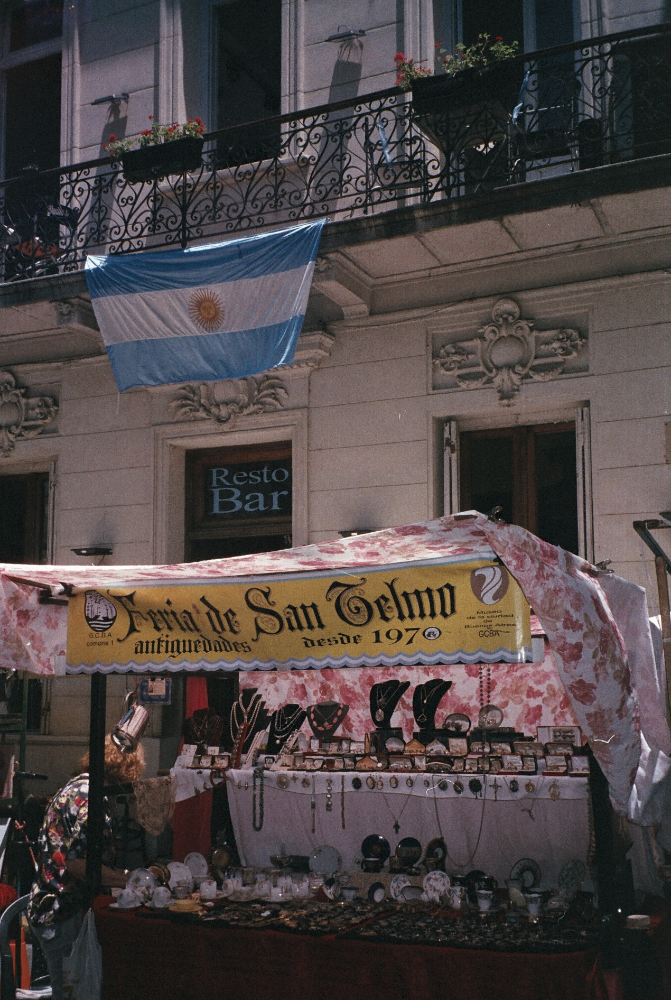
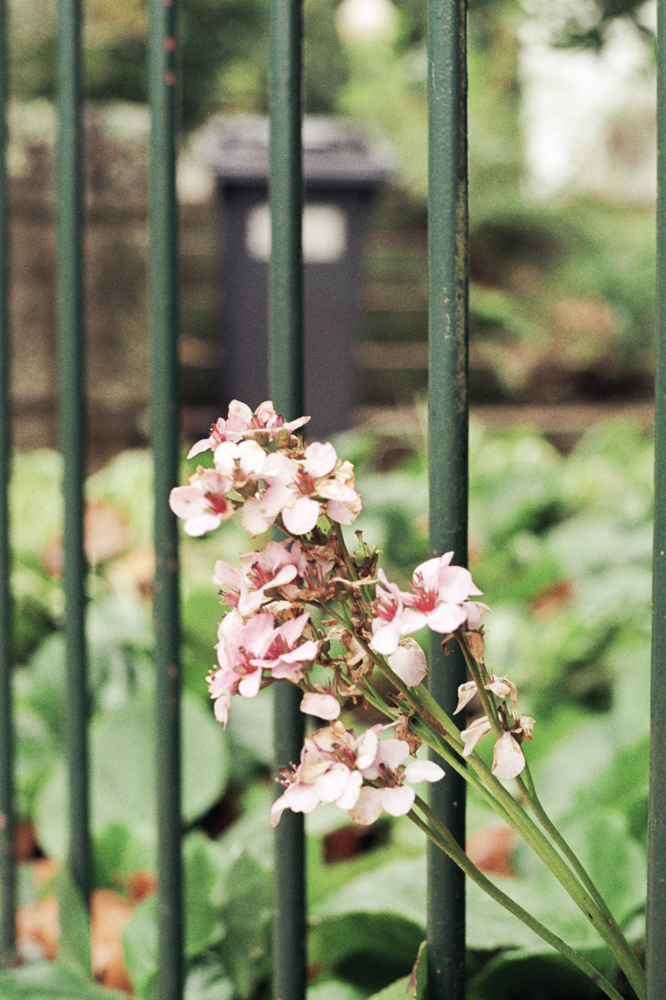
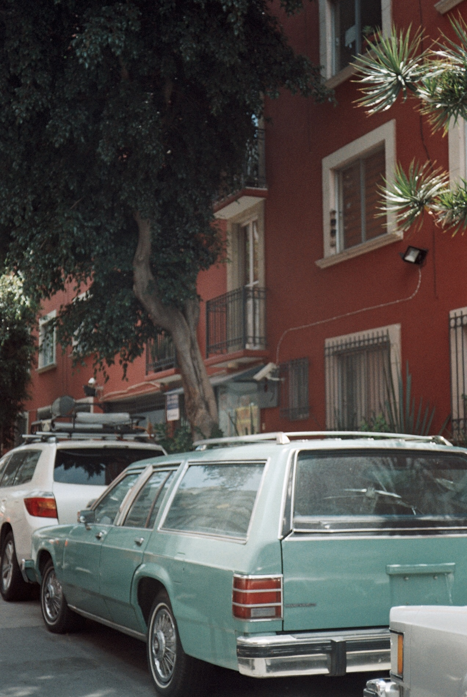
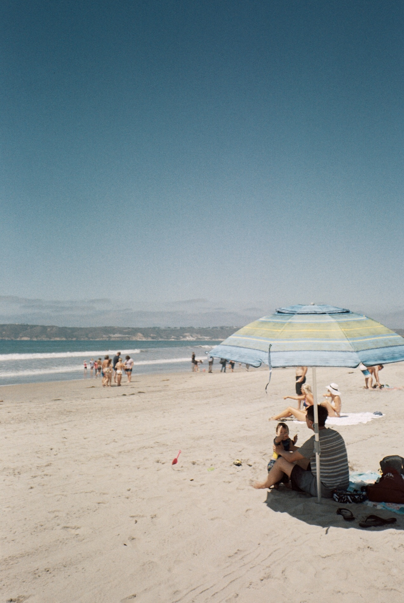
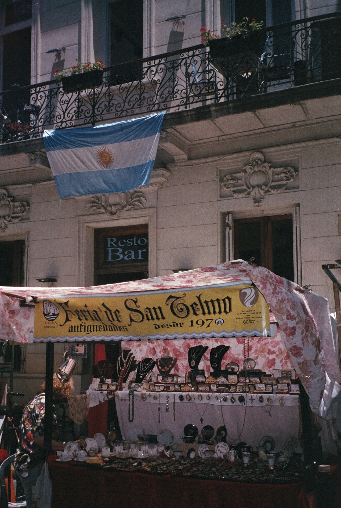

Beyond Astronomy
Outside of astronomy, I stay active with workouts a few times a week and attend dance classes, including Brazilian funk, salsa, and bachata. I also love going to concerts—I've been lucky enough to see Taylor Swift three times!
My passions are traveling the world and capturing memories through analog photography. I shoot with a Canon Prima BF Zoom 800 and a Canon AE-1.
 






